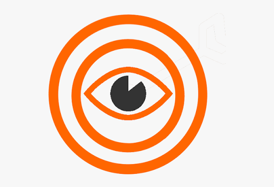
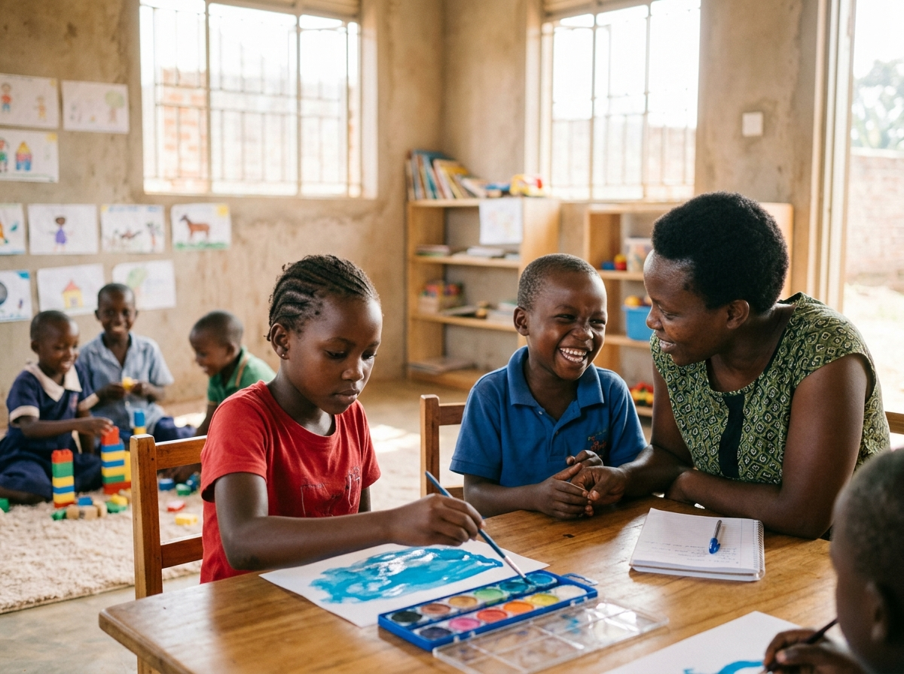

Our Core Activities & Programmes
At Trauma Healing Childcare and Development Association (THECCODA), all our programmes are guided by our mission to bring people together to build hope, peace and community, advancing our vision of a world enabling vulnerable individuals have access to better social services.

“A world enabling vulnerable individuals have access to better social services.”
Every programme is designed to dismantle barriers and provide dignified, equitable social services to those who need them most.

“Bring people together to build hope, peace and community.”
Uniting grassroots families, local leaders, and partners to bring lasting healing, reconciliation, and community resilience.
Caring for Vulnerable Persons
Extending unconditional care, emergency nourishment, shelter, and medical relief to orphans, elderly persons, people with disabilities, and disaster survivors in Bududa and across Uganda.
In mountainous rural regions like Bududa District, recurring natural disasters like mudslides leave behind destitute households where grandparents are forced to care for multiple orphans with no land, income, or physical mobility.
THECCODA operates a proactive village outreach network based in Makalama village. Our community caseworkers conduct regular door-to-door welfare assessments, delivering nutritious food packages, warm blankets, solar lamps, and hygiene essentials. For persons with mobility impairments, we supply wheelchairs, crutches, and home-based physical rehabilitation.


Counseling, Guidance & Trauma Healing
Restoring peace of mind, emotional resilience, and spiritual hope through professional psychotherapy, expressive art therapy, bereavement guidance, and faith-and-hope circles.
Trauma from catastrophic landslides, violent conflict, child neglect, or sudden bereavement inflicts silent, debilitating wounds. Without compassionate intervention, children withdraw into fear and developmental regression, while adults succumb to severe depression and familial strife.
THECCODA operates dedicated counseling rooms at our Makalama Headquarters staffed by licensed clinical child psychologists and pastoral counselors. We provide specialized non-verbal play and watercolor therapy for children, individual counseling for traumatized adults, and 120+ community-based Faith & Hope Circles across Bukibino and surrounding sub-counties.
Childcare, Protection & Education Support
Safeguarding vulnerable children through loving safe haven shelter, early childhood daycare, full school fee sponsorships, and 24/7 child crisis rescue.
Every child has a God-given right to safety, loving nurture, healthy nutrition, and quality education. When children are orphaned or face acute danger, THECCODA’s Makalama Safe Haven Sanctuary offers 24/7 emergency residential shelter, balanced meals, clean bedding, and pediatric healthcare.
In addition, our Education Bursary Scheme pays 100% of school tuition, uniforms, textbooks, and daily lunch for over 980 vulnerable children across 48 primary and secondary partner schools, breaking the cycle of rural illiteracy.


Community Development & Livelihood Empowerment
Fostering permanent self-reliance through 84+ Caregiver Village Savings & Loan Associations (VSLAs), vocational training, sustainable mountain agriculture, and clean gravity water.
Trauma healing is incomplete without economic dignity. When widowed mothers and foster grandmothers have the financial capability to purchase food, medicine, and home supplies, the threat of child neglect disappears.
THECCODA trains over 1,500 caregivers in commercial tailoring, baking, and terrace gardening. Our 84+ community-managed VSLAs provide affordable micro-credit without exploitative interest rates, while our water engineering projects have protected 26 hillside natural gravity springs, providing clean drinking water to over 14,000 villagers.
Partner with THECCODA in Transforming Lives
Whether giving locally in Uganda via MTN MoMo (984210) or Airtel (1204892), sending an international wire to our Centenary Bank account, or volunteering your expertise, your contribution builds hope in Bududa.